Практичний досвід · журнал «ДентАрт» 2021 №1
Попереднє моделювання – універсальний інструмент у реставрації зубів
MOCK-UP: A VERSATILE TOOL IN TEETH RESTAURATION
Ідея попереднього моделювання (mock-up) уперше була запропонована на початку 2000-х років, щоб перед лікуванням пацієнт міг максимально точно уявити, який вигляд матимуть його зуби. Ця стаття містить додаткову інформацію, є презентацією за трьома різними темами і дає уявлення про те, як мокап задіяний у різних сценаріях лікування. У разі естетичної корекції і функціональної реабілітації, чим раніше лікар отримає уявлення про кінцевий результат при плануванні процедур, тим краще. З таким підходом можна гарантувати, що всі учасники процесу лікування налаштовані на отримання одного і того ж результату і буде можливість скоригувати фінальні реставрації до того, як вони будуть зафіксовані.
Продемонструємо процес лікування за трьома різними сценаріями:
- косметичний підхід без препарування;
- косметичний підхід з мінімальним препаруванням;
- мінімальне препарування для відновлення зубів зі стертістю.
Косметичний підхід без препарування
Лікування без препарування стає дуже популярним завдяки рекламі та запитам пацієнтів. І, власне кажучи, на думку як стоматологів, так і керамістів, різниця в разі лікування без препарування і лікування з мінімальним препаруванням ледь помітна. З другого боку, за прогнозованістю і відтворюваністю виконання цей клінічний протокол не підлягає порівнянню. Лише в небагатьох ситуаціях можна обійтися виключно адитивною технікою роботи. Зазвичай слід брати до уваги потребу хоча б мінімальної редукції твердих тканин і використання воскового моделювання (wax-up). Тільки так можна створити гарний профіль прорізування і надати реставрації природного вигляду.
Проведене ортодонтичне лікування мікродонтії та діастеми – абсолютне показання для високласної реставрації без препарування. У цьому випадку молода пацієнтка хотіла, щоб після лікування її усмішка мала кращий вигляд. Першою важливою дією є аналіз композиції усмішки, щоб визначити ідеальну пропорцію. Тобто недостатньо змінити форму конусоподібних латеральних різців. Для того, щоб зуби мали ідеальний вигляд, варто трохи збільшити об'єм дистальної ділянки центральних різців і медіальних ділянок іклів. Тому в цьому випадку було запропоновано встановити 4 консервативні реставрації без препарування (часткові ламінати на зуби 13, 11, 21 і 23) і 2 повноцінних вініри (на зуби 12 і 22). Тут попереднє моделювання використовується для того, щоб визначити правильне співвідношення об'єму 6 фронтальних зубів і затвердити його.
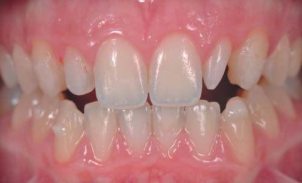
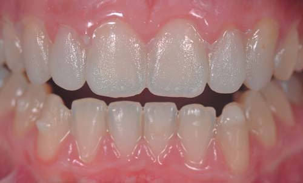
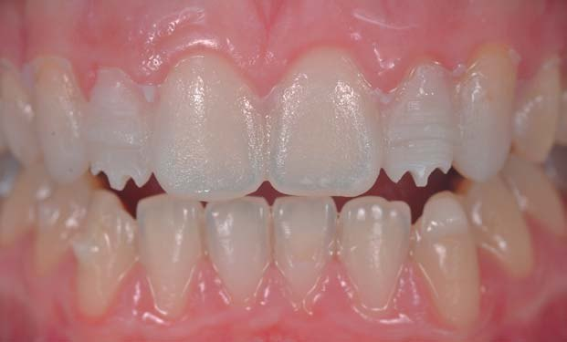
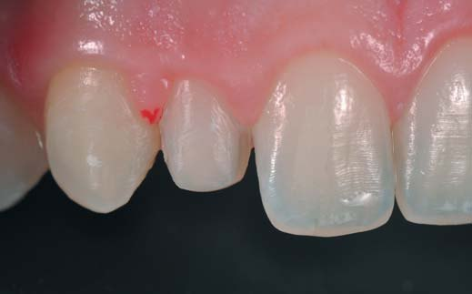
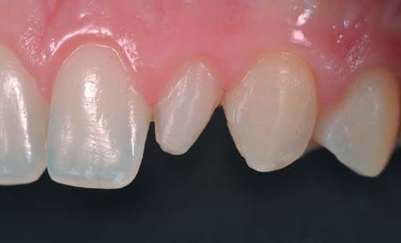
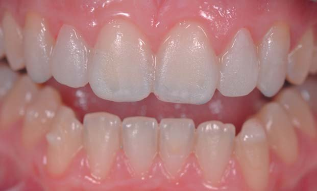
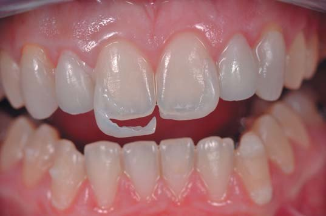
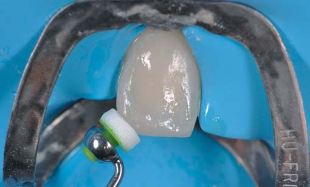
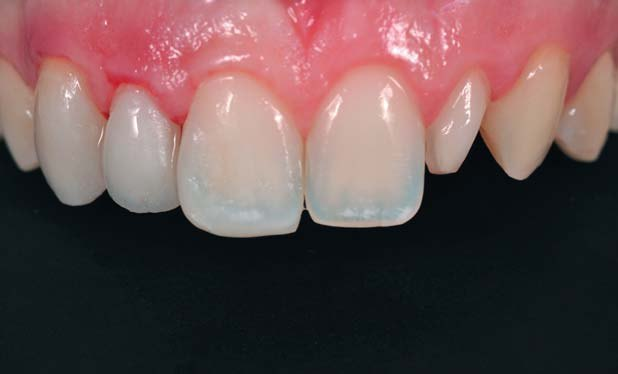
Послідовність полірування адитивних реставрацій:
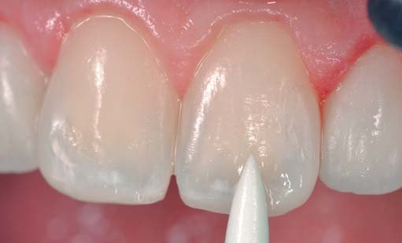
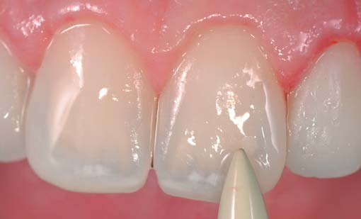
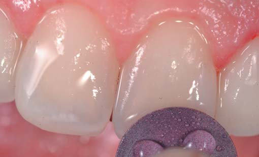
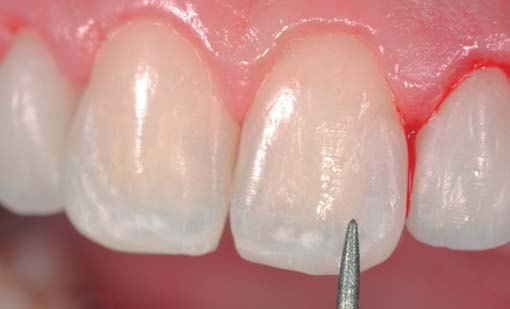
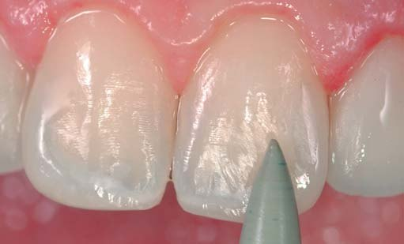
Косметичний підхід з мінімальним препаруванням
Коли підхід без препарування не забезпечує якихось переваг, хоча ми і маємо справу з косметичним випадком, попереднє моделювання потрібне не тільки для того, щоб отримати уявлення про кінцевий результат, а також як орієнтир для препарування.
Цей пацієнт уже пройшов лікування за допомогою вінірів приблизно 6 років тому, але він хоче, щоб його усмішка була яскравішою. Тому ми вирішили виготовити 10 вінірів (15-25), щоб верхні зуби мали ліпший вигляд.
На вимогу пацієнта з дуже яскравого біс-акрилового композиту Luxatemp Star відтінку «вибілений світлий» (DMG) було виготовлено адитивний мокап.
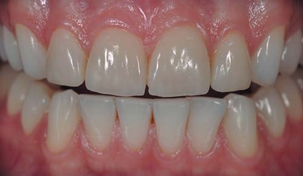
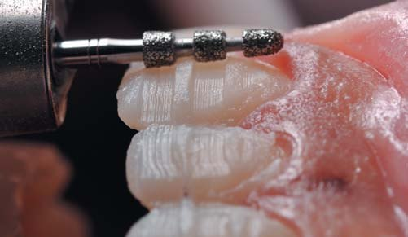
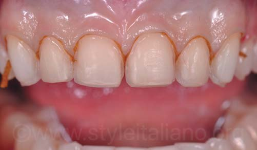
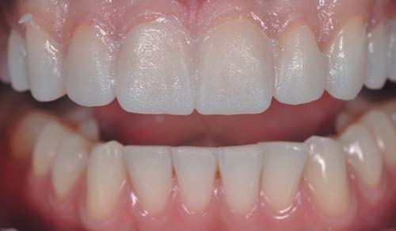
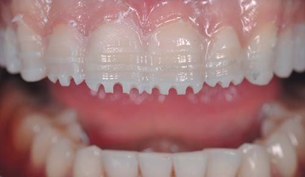
Після узгодження з пацієнтом форми і кольору зубів на мокапі ми залишили його в ротовій порожнині як орієнтир для препарування. Різцеві борозенки мають глибину 2 мм, що дасть загальну редукцію ріжучої грані на 1,5 мм.
Вестибулярна поверхня мокапа фактично відповідає об'єму постійної реставрації, препарується спеціальним бором для створення борозенок (Komet 868A 314 021). Дві канавки на вестибулярній поверхні із заданою глибиною 0,5 мм зроблені в зоні ріжучої і середньої третин і не зачіпають пришийкову ділянку емалі. Щоб цей бор не торкався пришийкової ділянки емалі, його слід тримати паралельно осі коронки.
Після зменшення товщини і глибини стоматолог має приділити основну увагу дизайну препарування і дотримуватися певних базових правил:
- збереження опуклості вестибулярної поверхні;
- край пришийкової ділянки повинен розташовуватися супрагінгівально на відстані 0,5 мм від ясен;
- край проксимальної ділянки, який потрібно відпрепарувати, має бути на відстані половини товщини контактної зони.
Крім того, що мокап використовується для візуалізації кінцевого результату лікування і препарування, він також є тимчасовою реставрацією. Для цього ми застосовуємо адгезивний засіб (без протравлювання), після чого засвічуємо цей же матеріал Luxatemp Star відтінку «вибілений світлий» (DMG) на відпрепарованих зубах, використовуючи силіконовий ключ як матрицю.
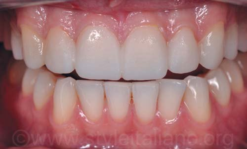
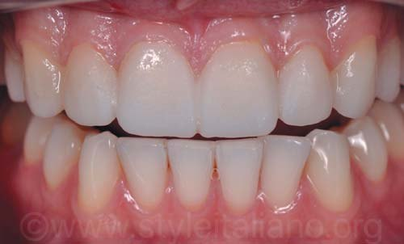
Щоб текстура поверхні вийшла красивою, а анатомія зубів була схожою на анатомію воскового моделювання, настійно рекомендуємо дати матеріалу застигнути протягом 5 хвилин перед тим, як отримати силіконовий ключ. У такому випадку він затвердне повністю.
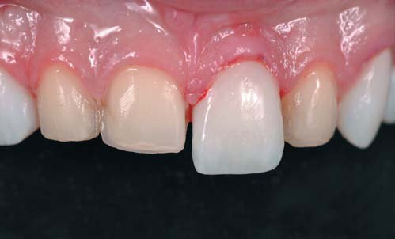
Мінімальне препарування при відновленні стертого зубного ряду, концепція повного попереднього моделювання
У цьому процесі візуалізації першою дією є створення діагностичного воскового моделювання на моделях, встановлених з урахуванням нового співвідношення щелеп. Висота прикусу збільшена, щоб можна було відновити морфологію оклюзії на зношеному зубному ряду найбільш мінімально інвазивною технікою, а також відновити лінію усмішки за допомогою шару реставраційного матеріалу належної товщини. У такому випадку стоматолог і зубний технік мають більше можливостей поліпшити оклюзійні співвідношення і зменшити навантаження на м'язи. Це дозволить відновити переднє ведення і змінити анатомію оклюзії. У більшості випадків відтворення ідеальної морфології і досягнення оптимальних результатів з мінімальним препаруванням було б майже неможливим без зміни висоти прикусу, а це означає, що від простору, потрібного для анатомічної реконструкції, залежатиме нова висота прикусу пацієнта, тобто зубний технік матиме всі необхідні дані. Чотири клінічних етапи, пов'язані з чотирма візитами пацієнта, були запропоновані нами для організації стандартизованого підходу і лікування, яке можна відтворити, з прогнозованим результатом. Цей підхід ми назвали концепцією повного попереднього моделювання (2018).
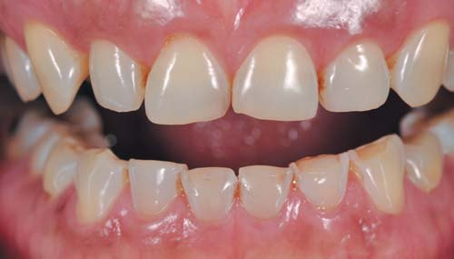
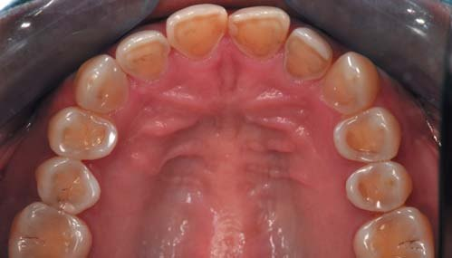
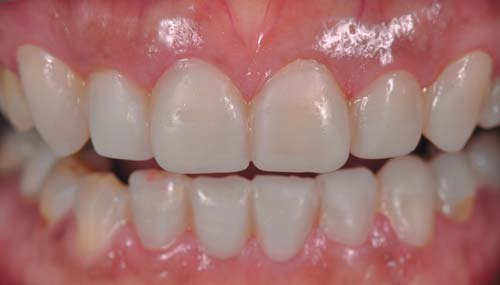
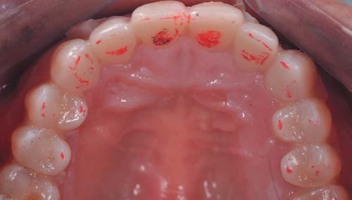
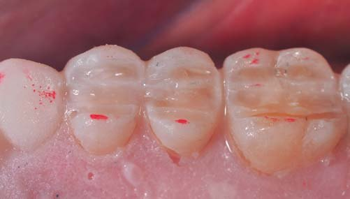
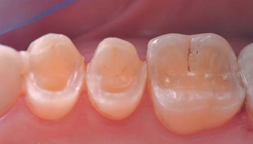
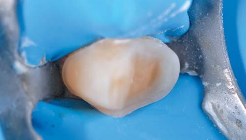
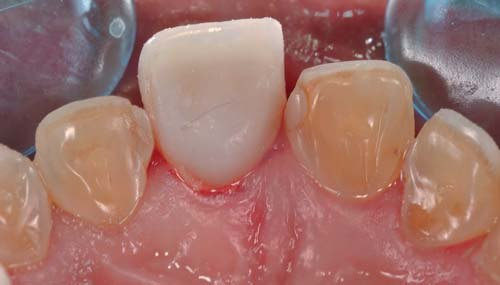
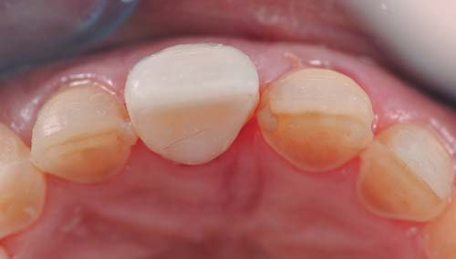
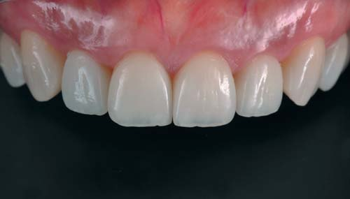
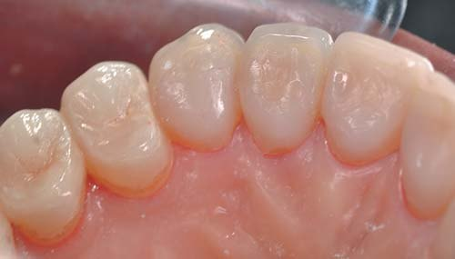
Висновки
Як випливає із цієї статті, попереднє моделювання (mock-up) є ключовим елементом усіх без винятку випадків естетичного лікування. Його вигідно використовувати не тільки для узгодження запланованого вигляду зубів після естетичної корекції, але також і для контролю препарування та функціональності. Якщо коротко, сьогодні мокап слід вважати принципово важливим інструментом з трьох основних причин:
- отримання уявлення про остаточний результат (естетичність і функціональність);
- орієнтир для редукування тканин на вестибулярній та оклюзійній поверхнях;
- швидке і просте виготовлення провізорних конструкцій.
Література
- Mizrahi B. Porcelain Veneers: Techniques and precautions. Int Dent SA. 2007; 9(6): 6-16.
- Koubi S., Gurel G., Margossian P., Massihi R., Tassery H. A. Simplified Approach for Restoration of Worn Dentition Using the Full Mock-up Concept: Clinical Case Reports. Int J Periodontics Restorative Dent. 2018 Mar/Apr; 38(2): 189-197.
- Gurel G. Predictable, precise, and repeatable tooth preparation for porcelain laminate veneers. Pract Proced Aesthet Dent. 2003; 15(1): 17-24.
- Magne P., Magne M. Use of additive wax-up and direct intraoral mock-up for enamel preservation with porcelain laminate veneers. Eur J Esthet Dent. 2008; 1(1): 10-19.
- Vailati F., Belser U. Classification and treatment of anterior maxillary dentition affected by dental erosion: the ACE classification. Int J Periodontics Restorative Dent. 2010 Dec; 30(6): 559-71.